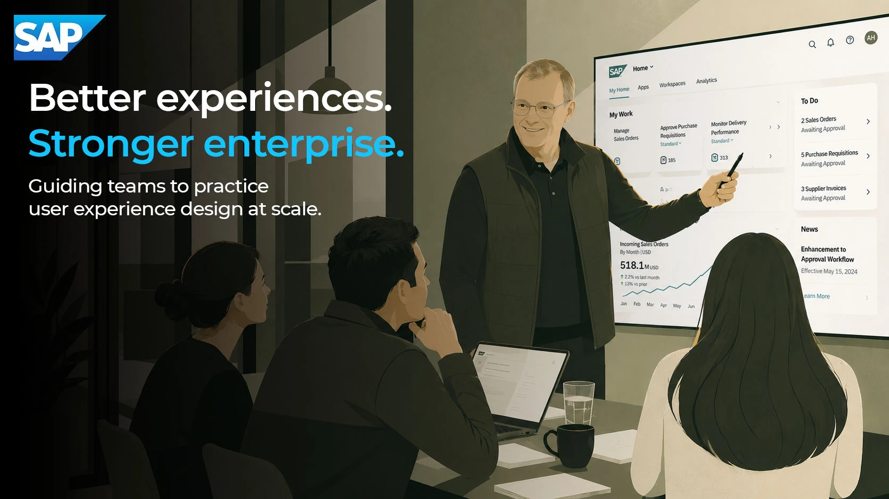

Lab · The Shortlist · 7 min read
The Shortlist
How might one shopping trip feel continuous across a phone, a store, and a person who works there? One trip, from a photo of a friend’s lamp to a store aisle, as a service map and a working prototype.
- The problem
- What a shopper works out at home stays on the phone. At the store door, the trip starts over.
- What’s different
- It carries the decision, not only the search: what you liked, your shortlist, and how sure the shelf count is.
- What I built
- A service map of one trip, and a working prototype at a phone’s width, on sample data.
- What it shows
- An idea worked through far enough to test. Nothing yet about demand, feasibility, or revenue: the study I’d run first is below.
An independent concept, designed and built by me with Claude Code, on sample data. No retailer is involved, the store is made up, and no shopper or employee has tried it yet.
The prototype
Try it, it’s live
The trip starts over at the door
You like the lamp at a friend’s house, so you take a picture. That night you find four that look close and narrow it to two.
Two days later you’re in the store. Which two were yours? Your phone knows, the aisle doesn’t, and the person who works there starts with “What are you looking for?”
Every part of that trip works. What breaks is the space between them: the context doesn’t travel.
Searching by photo already ships. In September 2026 Target described Photo Search and Continue Shopping in its app. The question here comes after it: what should follow the shopper into the store?
One trip, from the shopper down to the systems
Switch to Connected to see where today’s trip breaks, and pick a moment to follow it down.
At home, on the phoneIn the store
-

At a friend’s
- The shopper asks
- “Where would I find this?”
- How sure they feel
- Today: Taken with itConnected: Taken with it
- What they still have
- Photo
- TodayLine of visibility
- The photo sinks into a camera roll of four hundred.
- ConnectedLine of visibility
- The photo is kept as a question, with what you liked about it.
- Store employeeLine of internal interaction
- Not involved.
- Behind it
- Photo storage; visual search
- Where it can fail
- A poor photo leaves nothing to search.
-

At home
- The shopper asks
- “Is this the one, or just close?”
- How sure they feel
- Today: UnsureConnected: Narrowing it down
- What they still have
- Photo
- TodayLine of visibility
- Results look alike and don’t say why.
- ConnectedLine of visibility
- Each match says why, in words, and how it does on what you liked.
- Store employeeLine of internal interaction
- Not involved.
- Behind it
- Catalog attributes: shade, legs, height
- Where it can fail
- The catalog lacks the one attribute that matters.
-

Saving two
- The shopper asks
- “Does my store have them?”
- How sure they feel
- Today: UnsureConnected: Sure of two
- What they still have
- PhotoShortlistDoubts
- TodayLine of visibility
- “In stock,” with no date on it.
- ConnectedLine of visibility
- Each shelf count shows its age.
- Store employeeLine of internal interaction
- Counts the shelf on a schedule.
- Behind it
- Store inventory, with the time of each count
- Where it can fail
- There’s no timestamp to show.
-

Walking in
- The shopper asks
- “Which two were mine?”
- How sure they feel
- Today: LostConnected: Ready
- What they still have
- PhotoShortlistDoubtsLeft at the door
- TodayLine of visibility
- The app opens on the storefront.
- ConnectedLine of visibility
- The app opens on the list in walking order, with each aisle and bay.
- Store employeeLine of internal interaction
- Not involved.
- Behind it
- The saved list; the planogram
- Where it can fail
- The planogram is stale and the bay is wrong.
-

In the aisle
- The shopper asks
- “Settle, order, or leave?”
- How sure they feel
- Today: StuckConnected: Choosing
- What they still have
- PhotoShortlistDoubts
- TodayLine of visibility
- One shelf is empty, and nothing says so.
- ConnectedLine of visibility
- A comparison, what you liked first, and three ways forward.
- Store employeeLine of internal interaction
- Not yet. Nobody is paged until asked.
- Behind it
- Nearby stock; order and delivery
- Where it can fail
- The alternatives feel like upselling.
-

With a person
- The shopper asks
- “Do I explain it all again?”
- How sure they feel
- Today: Starting overConnected: Looked after
- What they still have
- PhotoShortlistDoubts
- TodayLine of visibility
- They do. The employee starts from zero.
- ConnectedLine of visibility
- The employee sees only what the shopper chose to share.
- Store employeeLine of internal interaction
- Checks the back room; weighs in on the near match.
- Behind it
- A request routed to whoever in Home is free; the shopper’s consent
- Where it can fail
- Nobody is free. The request stays open, and the desk is named.
What the map shows
-
The trip breaks at the store door
At every moment, a system knows something a person can’t get at. At the door, the shortlist stays behind on the phone.
Moments 04 to 06
-
A timestamp does more than any screen
“In stock” with no date is a guess. The time of each count tells the shopper how sure to be.
Moments 03 and 05
-
The employee’s count makes the help possible
Counting the shelf at moment three is what lets someone help at moment six, without starting from zero.
Moments 03 and 06
Five decisions, each resting on a guess
The AI matches, explains, and suggests; the shopper decides the rest.
-
Carry the context, not the cart
The store gets the photo, what you liked about it, and your shortlist. Never your account or your history.
My guess: what you liked is the one thing worth asking, once, under the photo.

-
Say why, and how sure
Each match says in words what matched and what didn’t: “Same shade, different legs,” not “87% match.”
My guess: a sentence someone can check against the photo earns more trust than a score.

-
Make “no” cheap
“Not it” sits beside “Save,” the same size, and hiding all four is allowed: “none of these” is an answer.
My guess: what someone turns down tells the app what they meant.

-
Give every shelf count its age
Three counted this morning is a fact. One last counted two days ago is closer to a guess, and the app says so before anyone drives four miles on it.
My guess: the age, printed every time, changes whether someone makes the trip.

-
Hand off to a person on purpose
“Ask someone in Home” is on the store screen from the start, and you choose what the employee sees.
My guess: an employee wants a stranger’s shortlist, and has the time for it.

Built for anyone in the aisle. Each new screen is announced and takes focus, nothing rests on color alone, and every control is at least 44 pixels. No screen reader user has tried it yet.
What I’d test first, and what would prove it wrong
The bet: if a shopper’s choices follow them into the store, they find things faster, decide with more confidence, and abandon fewer trips. For a retailer, that’s sales, satisfaction, and staff time.
The riskiest guess comes before all five decisions: does a person in an aisle want their phone out at all? If not, the store half shrinks to an aisle number and a hand-off.
- With shoppers
- Five people, each with their own photo, taking the whole trip with one of their two picks missing from the shelf.
- With staff
- Three people from a home department, fifteen minutes each, walked through the request.
- With engineering and store operations
- Which of the map’s bottom lanes exist today, and how old a shelf count really is.
-
Keep it
If most shoppers reach for the list in the aisle unprompted, can say why a match was offered, and the dated shelf count changes at least one decision.
-
Simplify it
If a plain list with aisle numbers does as well, if what they liked goes unused, or if the count reads as a promise.
-
Cut the store half
If the phone only comes out to pay, or staff say the request costs more time than it saves.
An afternoon to build, twenty years to know what to build
The service map took a morning and the prototype an afternoon. What went into them took longer:
-

2005 to 2013
Eight years in studios
The last five at Pixel Farm, designing and building at one desk. That’s where the feel of the trip comes from.
-

2013 to 2026
Thirteen years at RBA
Making 40+ SAP apps one product and a federal coalition’s grant tools one platform. That’s the bottom half of the map.
-

Now
Coding agents
They do much of the building now. Agent Review is my prototype of the design work that grows around them.
What I’d still need to learn is the store itself: its shoppers, operations, merchandising, and economics.
What I’d bring is the part that didn’t get easier: finding the right problem, making it real enough to try, and helping a team decide what to build.